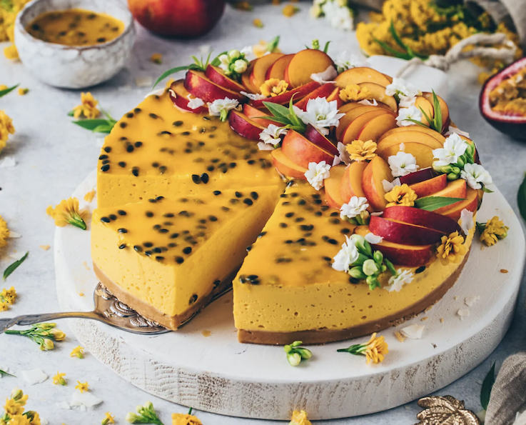

Mango Passion Fruit Cheesecake

Creamy, vegan, and perfect for the summer!
This light, yet creamy cheesecake is so easy to make!
It can even be frozen and tastes just like an ice cream cake!
Ingredients
- 200g vegan butter cookies
- 115g vegan butter
- 250g mango
- 250g vegan cream cheese
- 75g sugar
- 200ml coconut cream
- 80ml full fat coconut milk
- 1.5 tsp agar agar
- 2 tsp corn starch dissolved in 5 tbsp water
- 4 passion fruits
Steps
Crust
- Line bottom of 8 inch pan with parchment paper
- Blend cookies until finely ground
- Add melted vegan butter and mix thoroughly
- Press mixture onto bottom of your pan
- Refrigerate for at least 15 minutes to firm up
Filling
- Blend mango, cream cheese, and sugar together
- Whip coconut cream until stiff peaks form
- Mix agar-agar into coconut milk and cook for 2 minutes after bringing to boil
- Remove from heat and stir in 2-3 tablespoons of mango cream mixture
- Gently fold in remaining mango cream into agar-agar mixture
- Gently fold in whipped cream into the mixture and fill cookie crust
- Refrigerate overnight to firm up
- Stir cornstarch into water with passion fruit pulp and sugar
- Place over medium heat until mixture boils and thickens
- Once the cheesecake has firmed up, pour passion fruit sauce evenly over